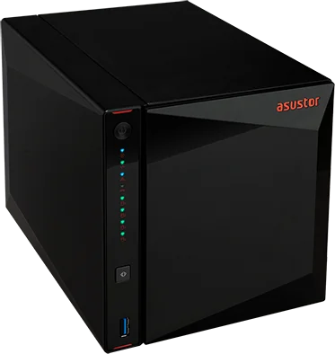
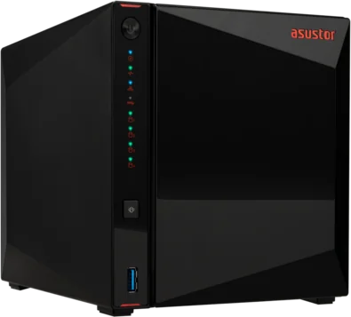
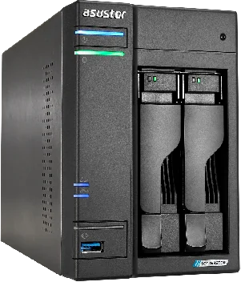
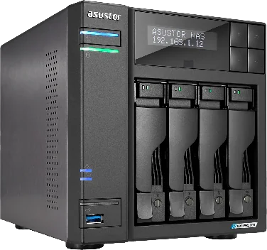
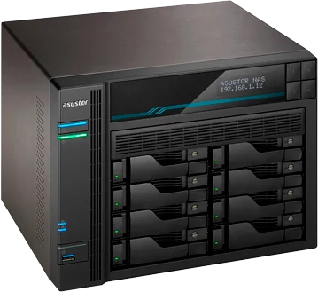
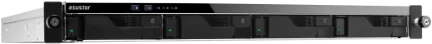
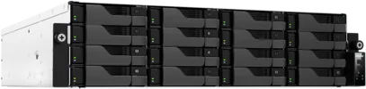

ASUSTOR
NAS Storage
ASUSTOR Drivestor 2 Lite (AS1102TL)
Entry-level 2-bay NAS for home backup, photo libraries and media streaming at a budget price.
- Drive bays: 2× 3.5"/2.5" SATA
- CPU: Realtek RTD1619B (quad-core, 1.7 GHz)
- Networking: 1× 1GbE
ASUSTOR network-attached storage, from 2-bay home units to 24-bay rackmount systems, plus expansion units.
A NAS (network-attached storage) is a small, always-on server that keeps your files, backups and media in one place, reachable from every PC, phone and office on your network. As the exclusive ASUSTOR partner in the Middle East, Plan Man supplies the complete ASUSTOR NAS range in Dubai and across the UAE, from 2-bay home units to 24-bay rackmount systems, and can supply the drives, install the NAS and set up backups for you.
Drivestor models for family photos, backups and media streaming.
Entry-level 2-bay NAS for home backup, photo libraries and media streaming at a budget price.

Compact 2-bay home NAS with 2.5GbE networking for personal backup and media.

4-bay home and small-office NAS with 2.5GbE for shared storage and backups.

4-bay value NAS with 2.5GbE for home users and small teams.

2-bay NAS with Btrfs snapshots and media transcoding for home offices and creators.

4-bay NAS with Btrfs snapshots and media transcoding for small offices and creators.
Intel NAS with 2.5GbE or 5GbE, M.2 NVMe slots and HDMI for media.

2-bay Intel NAS with dual 2.5GbE and HDMI output for home and media use.

4-bay Intel NAS with dual 2.5GbE and HDMI for content creators and small offices.

2-bay NAS with four M.2 NVMe slots and dual 2.5GbE for fast, hybrid flash storage.

4-bay NAS with four M.2 NVMe slots and dual 2.5GbE for fast shared storage.

2-bay enthusiast NAS with Celeron N5105, dual 2.5GbE and four M.2 NVMe slots.

4-bay enthusiast NAS with dual 2.5GbE, four M.2 slots and a PCIe slot for 10GbE.

6-bay enthusiast NAS with dual 2.5GbE, four M.2 slots and a PCIe slot for 10GbE.

Refreshed 2-bay Lockerstor with dual 5GbE and four M.2 NVMe slots.

Refreshed 4-bay Lockerstor with dual 5GbE, four M.2 slots and a 10GbE upgrade path.

Refreshed 6-bay Lockerstor with dual 5GbE, four M.2 slots and a 10GbE upgrade path.
AMD Ryzen and Intel Atom NAS with 10GbE and ECC memory for teams and file servers.

4-bay AMD Ryzen NAS with ECC DDR5, dual 10GbE, dual 5GbE and USB4.

6-bay AMD Ryzen NAS with ECC DDR5, dual 10GbE, dual 5GbE and USB4.

8-bay AMD Ryzen NAS with ECC DDR5, dual 10GbE, dual 5GbE and USB4.

10-bay AMD Ryzen NAS with ECC DDR5, dual 10GbE, dual 5GbE and USB4 for busy teams.

8-bay business NAS with dual 10GbE, dual 2.5GbE and M.2 SSD caching.

10-bay business NAS with dual 10GbE, dual 2.5GbE and M.2 SSD caching.
Silent, low-latency Flashstor NAS built entirely on M.2 NVMe SSDs.

Compact all-flash NAS with six M.2 NVMe slots and dual 2.5GbE for quiet, fast storage.

All-flash NAS with twelve M.2 NVMe slots and 10GbE for video editing and creative teams.

AMD Ryzen all-flash NAS with six M.2 NVMe slots, 10GbE and USB4.

AMD Ryzen all-flash NAS with twelve M.2 NVMe slots, ECC DDR5 and dual 10GbE.
1U to 24-bay rackmount NAS with redundant power for server rooms.

4-bay 1U rackmount NAS, with single (RS) or redundant (RD) power, for SMB file sharing and backup.

12-bay 2U rackmount NAS with redundant power for SMB file servers and backup targets.

12-bay 2U rackmount NAS with AMD Ryzen 7 PRO, up to 192 GB ECC DDR5 and redundant power.

16-bay rackmount NAS with AMD Ryzen 7 PRO, ECC DDR5 and room for 25/50GbE cards.

24-bay rackmount NAS with AMD Ryzen 7 PRO and ECC DDR5 for high-capacity business storage.
Add drive bays to an existing ASUSTOR NAS without rebuilding it.

4-bay USB-C expansion enclosure that adds capacity to an ASUSTOR NAS without downtime.

4-bay USB expansion unit; supported NAS models connect up to three for extra capacity.

12-bay 2U SAS/SATA JBOD expansion unit for ASUSTOR rackmount NAS.

SAS-3 host bus adapter (Broadcom HBA 9500-8e) for connecting Xpanstor 12R expansion units.
Count the storage you need today, double it for growth, then add room for RAID protection. Two bays suit a home; four to six bays suit most small offices; eight bays and up, or a rackmount NAS, suit growing teams. Expansion units add more bays later.
Gigabit is fine for backups and streaming. 2.5GbE and 5GbE make everyday file work noticeably faster on existing cabling, and 10GbE is the right choice for video editing and many users at once.
Entry models handle file sharing and backups. Choose an Intel Celeron or AMD Ryzen model with more memory if you plan to run apps, Docker containers, virtual machines or surveillance cameras on the NAS. ECC memory adds protection for business data.
Hard drives give the most capacity per dirham. M.2 NVMe slots add an SSD cache for speed, and an all-flash Flashstor NAS is silent and very fast for creative work.
Desktop NAS sit quietly in an office. Rackmount NAS fit server racks and add redundant power supplies so a single failure does not take your storage offline.
A NAS (network-attached storage) is a dedicated storage server on your network. It centralises files, backs up computers and phones automatically, streams media and gives secure remote access, without paying monthly cloud fees for large amounts of data. Most homes with many devices and almost every small office benefit from one.
For 5 to 20 people, a 4- to 8-bay Lockerstor is a good fit: the Lockerstor Gen3 (AS68 series) adds AMD Ryzen, ECC memory and 10GbE for busy teams, while the Lockerstor Gen2+ is a strong value choice. Tell us your users, capacity and applications and we will recommend a model.
Yes. We can supply NAS-rated hard drives and SSDs from Seagate and Western Digital, install them, configure RAID, users and shares, and set up backups, so the NAS is ready to use on delivery.
Yes. Plan Man is the exclusive ASUSTOR partner in the Middle East, supplying the full ASUSTOR NAS range, expansion units and genuine accessories from Dubai.
Yes. You can replace drives with larger ones, add SSDs in the M.2 slots, or connect ASUSTOR expansion units: USB units such as the Xpanstor 4 for desktop models, or the Xpanstor 12R SAS enclosure for rackmount Lockerstor R Pro Gen2 models.
Tell us your workload, quantities and timeline. We reply within one business day with a configuration, pricing and lead time.